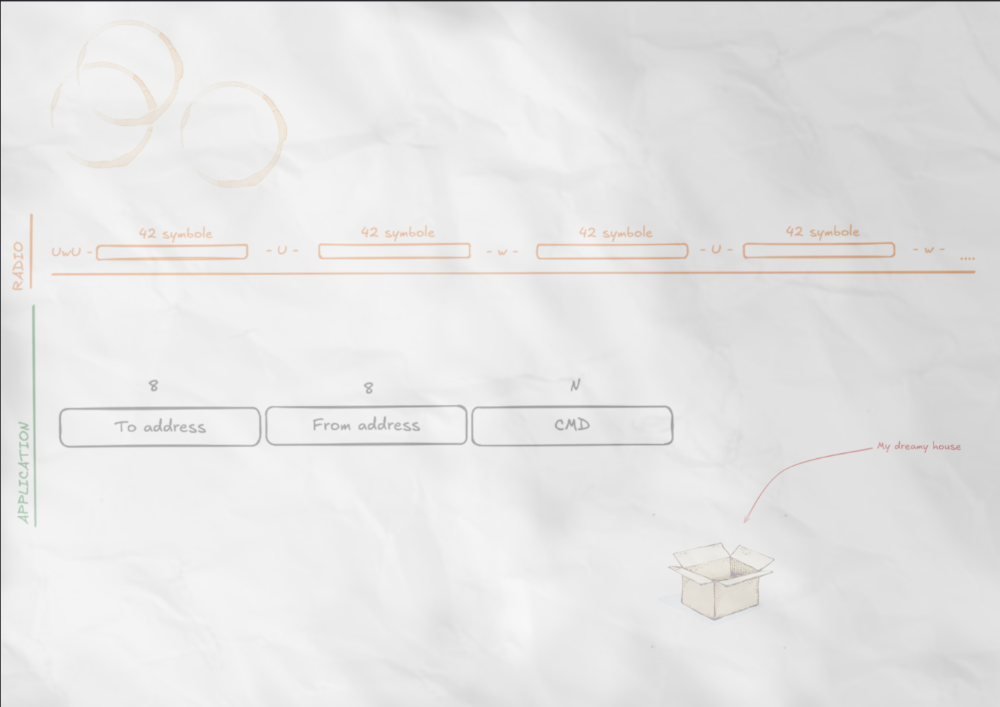

Dans le cadre de mon entraînement pour participer avec la Team France à l'ECSC, j'ai eu l'occasion de participer au CTF CWTE pour lequel il nous a été demandé d'écrire un challenge. J'ai donc choisi d'écrire un challenge sur la radio. Le challenge a été publié sur Hackropole : (https://hackropole.fr/fr/challenges/hardware/cte2025-hardware-uwuspy/). Dans cet article, je vais proposer un WU de ce challenge. Je remercie Elycar pour son aide.
WU (attention : spoiler)
Pour ce challenge, on dispose d'un certain nombre de fichiers : 3 samples qui donnent des exemples de communication, un script pour envoyer un fichier au serveur et une image d'indice :

On peut donc visualiser les signaux avec le script Python suivant :
import matplotlib.pyplot as plt
data = np.fromfile('sample-0.f32', dtype=np.float32)
plt.plot(data)
plt.show()


On a donc des exemples de longueurs différentes qui semblent transmettre des informations différentes. On peut cependant remarquer quelques points particuliers :
- la modulation semble être une modulation d'amplitude.
- un certain nombre de blocs semble être identifiable, notamment un header.
Si l'on relie le point deux à l'image d'indice, on peut, par parallélisme des formes, constater que la première frise semble indiquer l'agencement des blocs. En l'occurrence : deux en haut = U, trois en bas = w. Pour former un message, il doit commencer par « UwU », puis il est séparé en blocs de 42 symboles, alternant U et w. On peut donc créer un script pour extraire les blocs de données en vue du décodage. Comme souligné au point un, il s'agit d'une modulation d'amplitude : on peut démoduler les messages d'exemple, mais deux octets non ASCII relancent la communication. Si l'on revient à l'image d'indice, on comprend qu'il s'agit de l'adresse source correspondante. Les messages décodés sont les suivants.
VERSION
LIST ./movie
GET secret_file/super_secret_flag.txt
Ce qui nous donne les principales commandes du serveur. On va donc pouvoir générer des messages pour les envoyer au serveur. Il faut faire attention à plusieurs points :
- le header n'est pas complètement décoratif : il sert au script de décodage à établir l'étendue de l'ASK (modulation d'amplitude) ;
- il faut appeler le serveur à la bonne adresse ;
- il faut respecter strictement la constitution en blocs.
Après quelques échanges avec le serveur, on peut établir que les messages à envoyer sont les suivants :
LIST .
qui nous indique les dossiers suivants :
- movie
- secret_file
On liste secret_file et on trouve :
- flag_name_is_very_long_to_get_more_than_1_packet_i_hope_is_enough.txt
- super_secret_flag.txt
- agency_internal_report.txt
Avec la commande suivante, on récupère le flag :
GET secret_file/flag_name_is_very_long_to_get_more_than_1_packet_i_hope_is_enough.txt
On récupère le flag suivant : CWTE{m30w_m30w_W3_W1LL_D0M1N4T3_TH3_W0RLD_m30w}